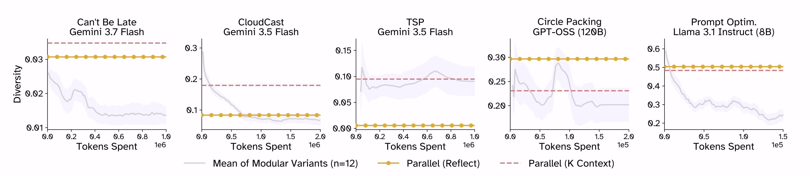
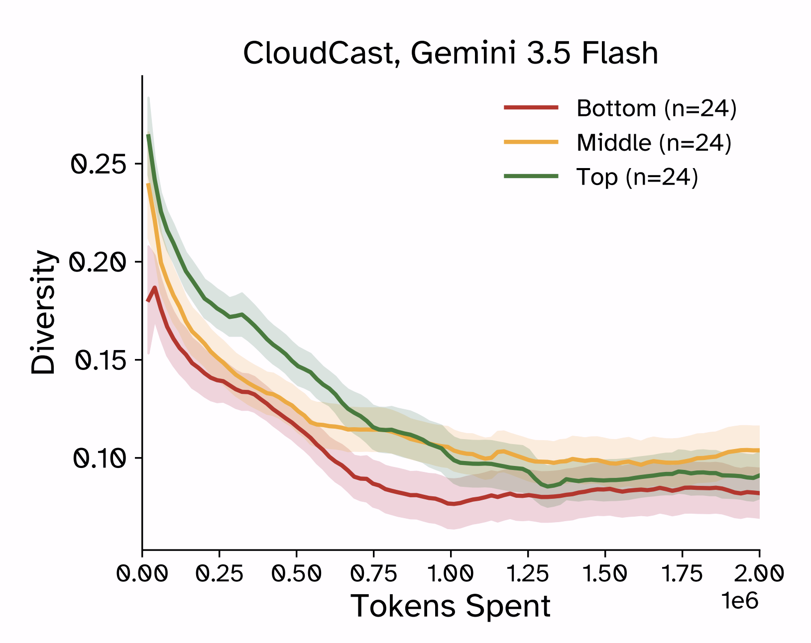

Abstract
Large Language Models (LLMs) have been used for novel discovery of algorithms, theorems, drugs, and other tasks through the use of harnesses that prompt an LLM to iteratively optimize an objective. In this work, we study the relationship between the population of previous iterates and eventual discovery success. We generalize past work on harness design to develop a suite of 12 harnesses called 'Modular' and characterize their performance across 5 diverse discovery tasks, finding that discovery success is brittle and sensitive to harness design. We uncover mode collapse, characterized by a dramatic drop in the diversity of iterates, as a common failure mode. We find that popular state-of-the-art harnesses and diversity-inducing harness interventions, which aim to prolong this collapse, yield inconsistent gains. Our results instead uncover that the performance of early discoveries is predictive of eventual success. We therefore propose a universally applicable intervention that performs an initial stage of parallel exploration in order to initialize subsequent iterative optimization. Our method provides consistent gains across many harnesses and target applications, confirming the importance of initialization in LLM-driven discovery.
What is LLM-Driven Discovery?
LLMs can be prompted to 1) generate and 2) iteratively refine "discoveries" (e.g., algorithms, molecules, theorems).
For example, an LLM can be prompted to: "Generate a fast sorting algorithm."
The initially generated algorithm can be timed and tested for correctness, and then this feedback can be provided to the LLM to aid in the generation of the next variant of the sorting algorithm.
The intuition is that providing an LLM feedback on past discovery iterates, can enable better future iterates.
Over the course of a discovery trajectory, an LLM can generate many different discovery iterates. A discovery harness can be used to manage this population of past dicoveries.
# A general discovery harness
argument descriptions:
task_objective: natural language description of discovery task (e.g., "Generate a sorting algorithm")
evaluate_discovery(): a procudure to evaluate an LLM generated discovery
population = [] # active population of past dicoveries
while tokens_used < token_budget:
parent_discoveries = select_parents(population)
new_discovery = LLM_Mutator(parent_dicoveries, task_objective)
score, meta_data = evaluate_discovery(new_discovery)
population = update_population(new_discovery, score, meta_data)
best_discovery = highest_score(population)
Modular: A Suite of Simple Discovery Harnesses
...
Parametric vs. In-Context Knowledge
...
Can and Should we Prevent Mode Collapse?
Sequential LLM disocovery harnesses are prone to mode collapse: the diversity of new iterates decreases over the course of a sequential trajectory. We hypothesize that this is due to the in-context prior, which is present and reinforced throughout sequential discovery, but absent in parallel discovery. We find that the parallel schemes generally have more diverse populations of discoveries than sequential harnesses.

We wondered if preventing mode collapse could enable better discoveries. To test this, we compared our simple Modular harnesses to harnesses which prioriotize diversity of iterates. We did this by:
- Comparing Modular harnesses to three state-of-the-art harnesses that treat population diversity as a key consideration in harness design.
- Applying a set of six interventions to Modular harnesses that aim to maintain diversity.

We observe that while high-performing trajectories can be marginally more diverse early on, they too can experience mode collapse over time. This suggests a more nuanced conclusion: in a trajectory with poor initial candidates, mode collapse around those candidates can prevent better ones from ever being discovered, so intervening on the population can help. In contrast, an initially high-performing trajectory may actually be hurt by unnecessary exploration and benefit from more exploitation. Distinguishing between these two scenarios is challenging, and exploration does not guarantee recovering from poor initial discoveries.Initialization Raises the Discovery Floor
...
Conclusion
In this work, we study the relationship between how discovery harnesses are initialized and how this affects downstream discovery quality. Through the development and characterization of a suite of discovery harnesses, we validate that sequential refinement of an initial seed discovery is beneficial, but sensitive to harness design. Subsequently, we find that harness design choices that aim to enable more diverse discoveries, from an initial seed discovery, do not predictably achieve more performant discoveries. However, we notice, across a wide range of (task, LLM) settings, that the best performing discovery trajectories can be predicted by their initial discovery quality. Building on this, we propose a simple, task-, LLM-, and harness-agnostic method to curate high-performing initial discovery populations. By warm-starting discovery harnesses with these initial populations, we consistently improve discovery harnesses’ performance.
BibTeX
@article{sakarvadia2026initialization,
title={Initialization Improves LLM-Driven Discovery},
author={Mansi Sakarvadia and Marco Ciccone and Colin Raffel},
year={2026},
url={https://arxiv.org/abs/2610.00707}
}